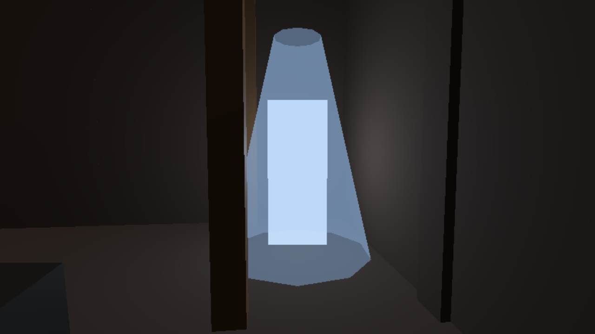

A warren he has cleared opens a passage at its Deep for the rest of the run: a crack of daylight in the rock, and E there takes him up out of the next cave round the compass. Left: the Deep's passage while the warren is not cleared (nothing, dark rock). Right: once it is cleared. The iron warren, built in the sky for the shot. Your notes go in notes.md.
